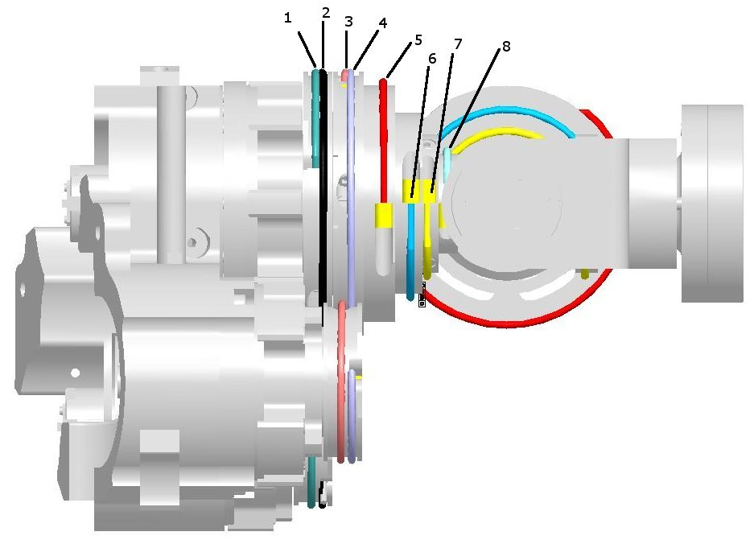
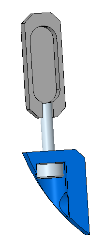
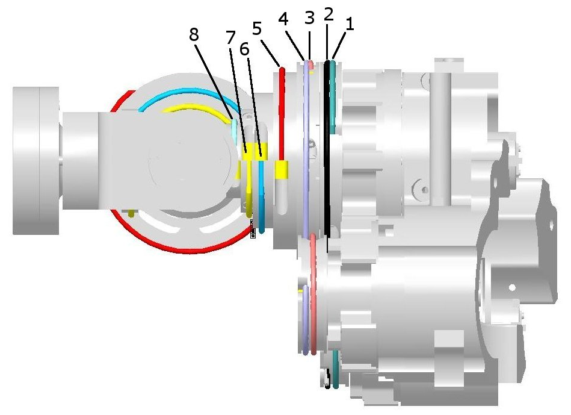
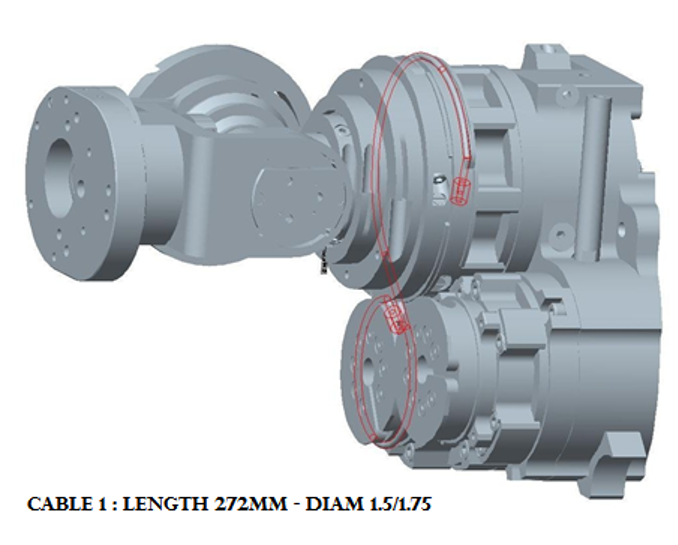

Shoulder & Elbow
This chapter describes the wiring procedure for the cables of the shoulders and elbows, for every version of iCub made from version 1 to version 2.5, either in mounting phase or during a maintenance.
1 Cable Construction
Cables from 1 to 6 are RC_IIT_019_G_00X - X from 1 to 6 - each made of U7191517 (IITCODE 2390) with different lengths (see the list above) and 2 crimps RC_TLR_003_P_101 (IITCODE 3492). The assembly resulting cable can be purchased from with IITCODE from 4758 to 4763.
| IITCODE | Alias | Description |
|---|---|---|
| 4758 | RC_IIT_019_G_001 | SHOULDER ROTATION CABLE 1 |
| 4759 | RC_IIT_019_G_002 | SHOULDER ROTATION CABLE 2 |
| 4760 | RC_IIT_019_G_003 | SHOULDER ROTATION CABLE 3 |
| 4761 | RC_IIT_019_G_004 | SHOULDER ROTATION CABLE 4 |
| 4762 | RC_IIT_019_G_005 | SHOULDER ROTATION CABLE 5 |
| 4763 | RC_IIT_019_G_006 | SHOULDER ROTATION CABLE 6 |
| 2390 | U7191517 | Stainless steel microcable, cable construction 7x19mm, nom. dia 1,5mm, outer dia 1,75mm, Polyamide coated, AISI 316 - CARL STAHL GMBH |
| 3492 | RC_TLR_003_P_101 | Thimble for cable 1.75mm (Diam int/ext/L 1.6/4.6/6 mm) - material X5CrNiMo1712 - AISI 316 |
| 1895 | IIT_003_P_006_00 | LEFT PULLEY - CRIMP COVER |
| 1896 | IIT_003_P_007_00 | RIGHT PULLEY - CRIMP COVER |
For Cable 7-8-9-10 measures see above (respectively IITCODE from 13736 to 13739). Alternatively you could build your own, made from U7191215 (IITCODE 2389) and 2 crimps (IITCODE 3877) BUT note that it is really important to shrink down to 4mm the crimp that will be inside the tensioner holder
| IITCODE | Alias | Description |
|---|---|---|
| 13736 | RC_IIT_019_G_029 | U7191215/SE000094 - 163mm - cyl. nipple AM420716/NI000007 - ball nipple KU000012 - CARL STAHL GMBH |
| 13737 | RC_IIT_019_G_030 | U7191215/SE000094 - 121mm - cyl. nipple AM420716/NI000007 - ball nipple KU000012 - CARL STAHL GMBH |
| 13738 | RC_IIT_019_G_031 | U7191215/SE000094 - 110mm - cyl. nipple AM420716/NI000007 - ball nipple KU000012 - CARL STAHL GMBH |
| 13739 | RC_IIT_019_G_032 | U7191215/SE000094 - 154mm - cyl. nipple AM420716/NI000007 - ball nipple KU000012 - CARL STAHL GMBH |
| 2389 | U7191215 | Stainless steel microcable, cable construction 7x19mm, nom. dia 1,2mm, outer dia 1,5mm, Polyamide coated, AISI 316 - CARL STAHL GMBH |
| 3877 | RC_TLR_005_P_101 | Thimble for cable Dia 1.5mm (Inner dia 1.25mm) |
The cabling sequence for the shoulder is the following:
(1 - 2) - (3 - 4) - (8 - 7) - (6 - 5)
2 Left Shoulder

Rules for a good start
1.Always remove the broken cable
2.Pay attention of putting the tensionner upside down so that the crimp does not exit
3a.Keep in Mind that the shoulder is a set of 4 pairs of antagonistic cables : (1-2), (3-4), (8-7), (6-5)
3b.And by so,to put back in place one pair of cable you need to make sure that the tensioners for both cables are loose
| Block of pulleys | Tensioner fully opened | Cavity of the tensioner hidden - crimp can't escape |
|---|---|---|
 |
 |  |
2.1 Left Shoulder Rotation Cable 1 and 2
If you have to repair cable 1 and/or cable 2, it is convenient to first:
- Remove the chest cover (follow this procedure) in order to have better access to the pulleys
- Loose also the cables 5-6-7-8 in order to easily turn the pulleys of cables 1&2 and thus tension them
- Tension cables 1 and 2, attach the other cables and finally tension them
In order to access the tensioners of cables 1 and 2, you have to remove the small metal cover on both pulleys, as shown below, by unscrewing the M2x5 screw holding them:
| Tensioner cover | Tensioner cover CAD model |
|---|---|
 |
 |
Let's see the cabling of tendons 1 & 2 in detail:

Follow the diagram above to route the cable N1. Once the head of the crimp reach the small pulley. Add atop of it the left crimp cover in ABS (IIT CODE: 1895)
| Crimp cover above the small pulley | Left crimp cover |
|---|---|
 |
 |
Danger
You need to remove both tensioners of cable 2 and 3 in order to change one of them - meaning re-cabling pairs (1-2) and (3-4)

Route cable N2 as per the diagram above.
Now you can tense both screws for tension cable 1 and 2
Tip
Do cycles of 5 turns for each screws in order to find an equal tensioning
Make sure you face the crimps as shown below before tensioning, in order to have access to them. The down pulley should be rotated like shown:
 |
 |
2.2 Left Shoulder Elevation Cable 3 and 4

As per cable N1, just route cable N3 following the diagram above and prevent the crimp from escaping by adding the left cover crimp (IITCODE : 1895)

Route cable N4 as per the diagram above.
Now you can tense both screws for tension cable 3 and 4
Tip
Do cycles of 5 turns for each screws in order to find an equal tensioning
IMPORTANT NOTES for Cable from 8 to 5
From cable 8 to 5
To mount the cables 8 - 7 - 6 - 5, it is important to start with all of them already disconnected. You first need to replace the broken cable(s) by starting to enter the head crimp (4mm size – smaller one or ball crimp) of the cable 7 and 8 inside their respective tensioner. You will need later to start wiring cable 7 and 8 in their future path BUT to do so it is necessary to create SPACE FOR THE CRIMPS TO PASS.
There are 2 designs for the shoulder so it is necessary to see the difference in between both of them to know how to untighten the good pieces and screws to create that SPACE
VERSION 1
- Remove the beige pulley (remove the 4 screws M2x12) until you don't remount cable 5
- Reach the 2 screws M4x12 on the green pulley and just untighten them until you can pass both crimp 8 and 7 following the routing explain below.
- Close the gap in order to prevent the cables 8 and 7 to exit - tighten the 2 screws M4x12
- Start wiring
VERSION 2

- Loose the the 2 screws M4x12 to slide a bit the block of 2 pulleys (grey and yellow) to give space until you can pass both crimp 8 and 7 following the routing explain below.
- Close the gap in order to prevent the cables 8 and 7 to exit - tighten the 2 screws M4x12
- Start wiring
2.3 Left Shoulder Elevation Cable 8 and 7


In order to insert these cables, you need to turn the 2 pulleys and align the teeth as shown in the picture above.
Once both crimps jumped over the 2 teeth holding the crimp in position - you can start tightening the screws of the tensioners 7 and 8.
2.4 Left Shoulder Elevation Cable 6 and 5
Those 2 cables are quite straight forward to mount, just follow the 2 following pictures.
Once both crimps jumped over the 2 teeth holding the crimp in position you can start tightening the screws of the tensioners 6 and 5.
3 Left Elbow cabling
Those 2 cables are not specifically difficult to route but unfortunately you need to operate cautiously to do NOT damage the electronical boards located beneath the upper arm.

Warning
EITHER you remove the Lower Arm by Following the instructions for Lower Arm V1 or Lower Arm V2 OR You are helped by someone else to hold the Lower Arm (Forearm + Hand).
Rules of routing
- Remove the lower part of the upper arm cover if NOT done yet
- Remove the lateral plate (the ONE with NO sensor) by unmounting the 2 screws holding it.
- Turn the main shaft by the help of a screw driver to apply enough torque to make it spin, until you reach the same situation as the pictures above (this is the view from below of the elbow)
- Replace the broken cable(s) by starting to enter the head crimp (4mm size – smaller one or ball crimp) of the cable 9 and 10 inside their respective tensioner.
- Pass both heads of crimp before reattaching the Lateral Plate.
- Position the head of crimp in their socket
- start tightening the screws of both tensioner.
4 Right Shoulder
Advice
Take look at the beginning of this web page to have all the information related to the dimensions of cables and how to get or build them.
The cabling sequence for the shoulder is the following:
(1 - 2) - (3 - 4) - (8 - 7) - (6 - 5)

Rules for a good start
1.Always remove the broken cable
2.Pay attention of putting the tensionner upside down so that the crimp dont exit
3a.Keep in Mind that the shoulder is a set of 4 pairs of antagonistic cables : (1-2), (3-4), (8-7), (6-5)
3b.And by so,to put back in place one pair of cable you need to make sure that the tensionner for both cables are loose
| Block of pulleys | Tensionner fully opened | Cavity of the tensionner hidden - crimp can't escape |
|---|---|---|
|
|
4.1 Right Shoulder Rotation Cable 1 and 2
If you have to repair cable 1 and/or cable 2, it is convenient to first:
- Remove the chest cover (follow this procedure) in order to have better access to the pulleys
- Loose also the cables 5-6-7-8 in order to easily turn the pulleys of cables 1&2 and thus tension them
- Tension cables 1 and 2, attach the other cables and finally tension them
In order to access the tensioners of cables 1 and 2, you have to remove the small metal cover on both pulleys, as shown below, by unscrewing the M2x5 screw holding them:
| Tensioner cover | Tensioner cover |
|---|---|
|
|
Let's see the cabling of tendons 1 & 2 in detail:

Follow the diagram above to route the cable N1. Once the head of the crimp reach the small pulley. Add atop of it the right crimp cover in ABS (IIT CODE: 1896)
| Crimp cover above the small pulley | Right crimp cover |
|---|---|
 |
 |
Danger
You need to remove both tensioner of cable 2 and 3 in order to change one of them - meaning re-cabling pairs (1-2) and (3-4)

Route cable N2 as per the diagram above.
Now you can tense both screws for tension cable 1 and 2
Tip
Do cycles of 5 turns for each screws in order to find an equal tensioning
Make sure you face the crimps as shown below before tensioning, in order to have access to them. The down pulley should be rotated like shown:
|
|
4.2 Right Shoulder Elevation Cable 3 and 4
As per cable N1, just route cable N3 following the diagram above and prevent the crimp from escaping by adding the right cover crimp (IITCODE : 1896)
Route cable N4 as per the diagram above.
Now you can tense both screws for tension cable 3 and 4
Tip
Do cycles of 5 turns for each screws in order to find an equal tensioning
IMPORTANT NOTES for Cable from 8 to 5
From cable 8 to 5
To mount the cables 8 - 7 - 6 - 5, it is important to start with all of them already disconnected. You first need to replace the broken cable(s) by starting to enter the head crimp (4mm size – smaller one or ball crimp) of the cable 7 and 8 inside their respective tensioner. You will need later to start wiring cable 7 and 8 in their future path BUT to do so it is necessary to create SPACE FOR THE CRIMPS TO PASS.
There are 2 designs for the shoulder so it is necessary to see the difference in between both of them to know how to untighten the good pieces and screws to create that SPACE
VERSION 1
- Remove the beige pulley (remove the 4 screws M2x12) until you don't remount cable 5
- Reach the 2 screws M4x12 on the green pulley and just untighten them until you can pass both crimp 8 and 7 following the routing explain below.
- Close the gap in order to prevent the cables 8 and 7 to exit - tighten the 2 screws M4x12
- Start wiring
VERSION 2

- Loose the the 2 screws M4x12 to slide a bit the block of 2 pulleys (grey and yellow) to give space until you can pass both crimp 8 and 7 following the routing explain below.
- Close the gap in order to prevent the cables 8 and 7 to exit - tighten the 2 screws M4x12
- Start wiring
4.3 Right Shoulder Elevation Cable 8 and 7


Once both crimps jumped over the 2 teeth holding the crimp in position - you can start tightening the screws of the tensioners 7 and 8.
4.4 Right Shoulder Elevation Cable 6 and 5
Those 2 cables are quite straight forward to mount, just follow the 2 following pictures.
Once both crimps jumped over the 2 teeth holding the in position you can start tightening the screws of the tensioners 6 and 5
5 Right Elbow cabling
Those 2 cables are not specifically difficult to route but unfortunately you need to be cautious to proceed undamaging the electronical board located beneath the upper arm.

Warning
EITHER you remove the Lower Arm by Following the instructions for Lower Arm V1 or Lower Arm V2
OR You are helped by someone else to hold the Lower Arm.
Rules of routing
- Remove the lower part of the upper arm cover if NOT done yet
- Remove the lateral plate (the ONE with NO sensor) by unmounting the 2 screws holding it.
- Turn the main shaft by the help of a screw driver to apply enough torque to make it spin, until you reach the same situation as the pictures above (this is the view from below the elbow)
- Replace the broken cable(s) by starting to enter the head crimp (4mm size – smaller one or ball crimp) of the cable 9 and 10 inside their respective tensioner.
- Pass both heads of crimp before reattaching the Lateral Plate.
- Position the head of crimp in their socket
- start tightening the screws of both tensioner.